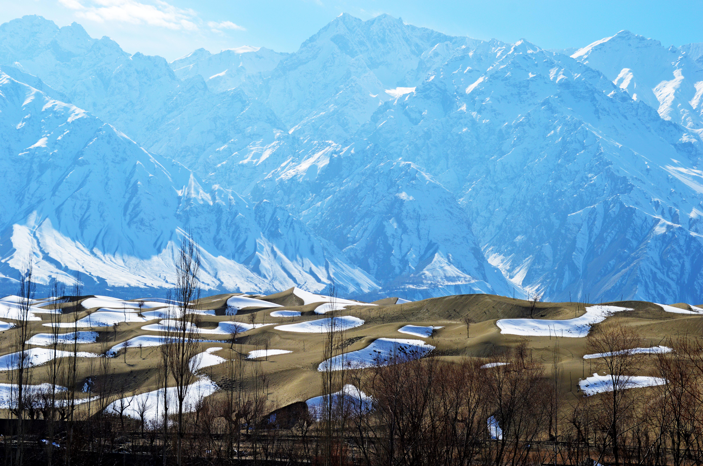
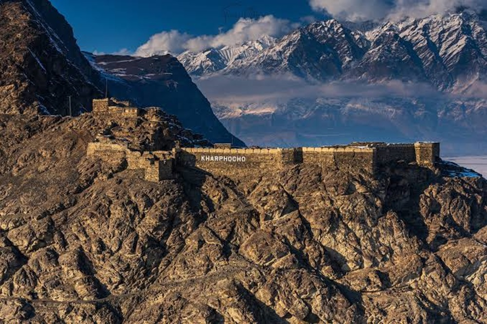

The Roof of the World
Skardu is the capital of Skardu District in Gilgit-Baltistan and serves as the base camp for expeditions to K2, Broad Peak, Gasherbrum I & II, and many other Karakoram giants. Located at 2,228 metres above sea level, it sits in a broad valley at the confluence of the Indus and Shigar rivers.
The landscape around Skardu is stark and magnificent — towering granite walls, vast desert plateaus at altitude, and emerald cold-water lakes make it unlike anywhere else on earth.

Must-See Destinations Around Skardu

Shangrila Lake (Lower Kachura)
A stunning lake set in a fertile valley, often called Shangrila Resort — Pakistan's "Heaven on Earth."

Katpana Desert
A high-altitude cold desert — one of the highest and most unusual deserts in the world, surrounded by snow-capped peaks.

Skardu Fort (Kharpocho)
A 16th-century fort perched on a rock overlooking the Indus River and the Skardu Valley — commanding views in every direction.

Deosai National Park
One of the world's highest plateaus (average 4,114 m), home to the Himalayan brown bear and spectacular wildflowers in summer.